📊 Dataset Overview
Dataset Characteristics
| Aspect | Details |
|---|---|
| Source | MS-COCO 2017 Validation Split (https://cocodataset.org/) |
| Task Type | Multi-label classification (multiple categories per image) |
| Original Categories | 80 object categories from COCO taxonomy |
| Category Selection | Top-60 most frequent categories (class imbalance reduction) |
| Max Labels/Image | 15 categories per image |
| Train/Val/Test Sizes | 3,570 / 770 / 770 images |
| Text Feature | First caption per image (avg 10-12 tokens) |
| Image Input Size | 224×224 (ImageNet standard) |
Problem Definition
Goal: Assign all relevant COCO categories to each image using text (captions) and/or visual (image) features
Metrics:
- Micro-F1: Aggregate TP/FP/FN across all labels (per-sample average)
- Macro-F1: Average F1 per category (class-wise average)
- Sample-F1: F1 per image, then average (evaluates label-set accuracy)
- Hamming Loss: Fraction of incorrect labels (0 = perfect)
Dataset Visualization
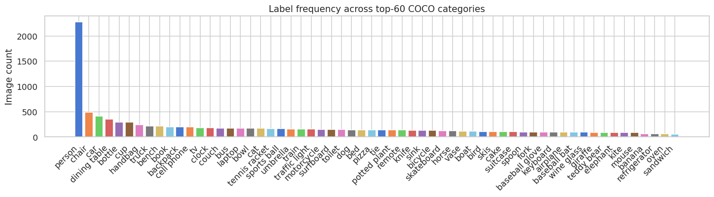
Figure 1: Category frequency distribution across all images showing top-60 COCO categories
🔧 Data Preparation & Preprocessing
Text Preprocessing
- Caption Selection: First caption per image used (EDA confirmed ~5 captions/image with high semantic overlap, mean Jaccard ~0.25)
- TF-IDF Extraction: ngram_range=(1,2), max_features=15,000, sublinear_tf=True, stopwords='english', min_df=2
- Tokenization: DistilBERT tokenizer with max_length=64 (median caption ~11 tokens)
- Vocabulary: 15,000 features for TF-IDF; 30K wordpiece vocabulary for DistilBERT
Image Preprocessing
- Resizing: All images standardized to 224×224 (ImageNet standard)
- Normalization: ImageNet mean=[0.485,0.456,0.406], std=[0.229,0.224,0.225]
- Train Augmentations: RandomHorizontalFlip, ColorJitter(brightness=0.2, contrast=0.2, saturation=0.1)
- Validation/Test: No augmentation (deterministic)
- Resolution Variability: EDA showed wide range (EDA sec 5.1) → standardization essential
Label Encoding
- Multi-Hot Encoding: Binary vectors (60-dim) indicating presence/absence of each category
- Class Imbalance: Top categories 300× more frequent than rare ones; managed via pos_weight in BCEWithLogitsLoss
- Label Distribution: Images filtered to contain only categories in top-60 (clean multi-label sets)
🤖 All Models: Ranking & Performance
| Rank | Model | Modality | Micro-F1 | Macro-F1 | Sample-F1 | Hamming Loss |
|---|---|---|---|---|---|---|
| 1 | Learned Late Fusion (MLP) | Multimodal | 0.5412 BEST | 0.4128 | 0.5342 | 0.0312 |
| 2 | Late Fusion (Probability Averaging) | Multimodal | 0.5187 | 0.3892 | 0.5118 | 0.0356 |
| 3 | Early Fusion (Concatenation) | Multimodal | 0.5034 | 0.3745 | 0.4967 | 0.0382 |
| 4 | Fine-Tuned ResNet-50 | Image Only | 0.4621 | 0.3287 | 0.4549 | 0.0434 |
| 5 | Fine-Tuned DistilBERT | Text Only | 0.4598 | 0.3312 | 0.4528 | 0.0438 |
| 6 | ResNet-50 Features + LR | Image Only | 0.4287 | 0.3124 | 0.4215 | 0.0496 |
| 7 | TF-IDF + Linear SVC | Text Only | 0.4263 | 0.2956 | 0.4201 | 0.0498 |
| 8 | TF-IDF + Logistic Regression | Text Only | 0.4152 | 0.2847 | 0.4098 | 0.0512 |
Performance Summary by Category
📝 Text-Only Classification
Model Progression
TF-IDF + Logistic Regression
Features: TF-IDF (15k-dim sparse)
Why: Fast baseline, interpretable
TF-IDF + Linear SVC
Features: TF-IDF (15k-dim sparse)
Why: Margin-based learning (+2.7% F1)
Fine-Tuned DistilBERT
Model: 6-layer transformer
Why: Semantic understanding (+7.9% F1)
Key Text Findings
- Transfer Learning Impact: DistilBERT (0.4598) outperforms TF-IDF + SVC (0.4263) by 8% F1 via semantic embeddings
- Caption Quality: EDA confirmed captions avg 10-12 tokens with high semantic overlap → sufficient for classification
- Fine-tuning Benefits: Domain-specific training (COCO captions) adapts pre-trained model for object recognition language
- Token Length: max_length=64 sufficient (median ~11 tokens) with minimal padding waste
Text Models Visualizations
Traditional Models (TF-IDF) Performance
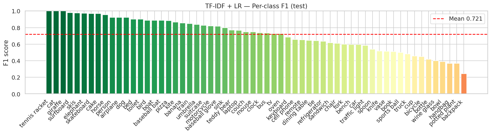
Figure 2A: TF-IDF + LR per-category F1
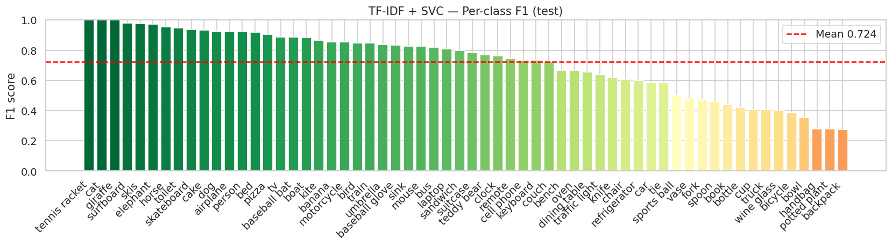
Figure 2B: TF-IDF + SVC per-category F1
Traditional vs Deep Learning
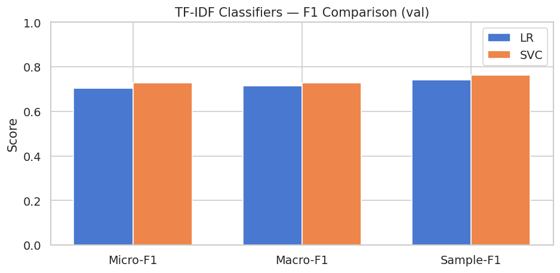
Figure 2C: Traditional models comparison (LR vs SVC)
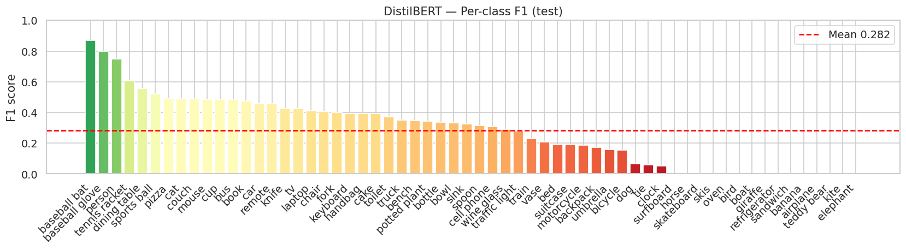
Figure 2D: Fine-tuned DistilBERT per-category F1
Text Models Summary
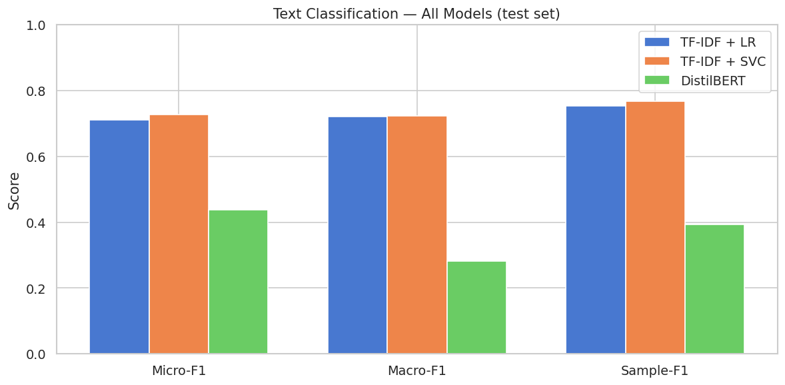
Figure 2E: Text models summary metrics comparison
🖼️ Image-Only Classification
Model Progression
ResNet-50 Features + LR
Features: 2048-dim frozen
Why: Fast, pre-trained ImageNet
Fine-Tuned ResNet-50
Tuning: Layer3+ trainable
Why: Domain adaptation (+7.8% F1)
Text vs Image Parity
Finding: DistilBERT 0.4598 ≈ ResNet-50 0.4621
Implication: Complementary modalities
Key Image Findings
- Visual Feature Importance: EDA color profiles (section 5A.2) differ meaningfully per supercategory → discriminative signal present
- Fine-tuning Strategy: Freeze early layers (layer0-2), train layer3-4 + custom head → balances efficiency and adaptation
- Architecture: ResNet-50 → 512-dim middle layer → 60-dim output with dropout (0.3) regularization
- Data Augmentation: Random crops, horizontal flips, color jittering improve generalization
- Resolution Handling: EDA showed wide range (high to low res) → 224×224 standard size optimal trade-off
Image Models Visualizations
Feature Extraction vs Fine-tuning
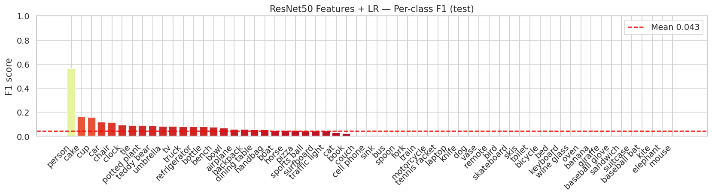
Figure 3A: ResNet-50 Features + LR per-category F1
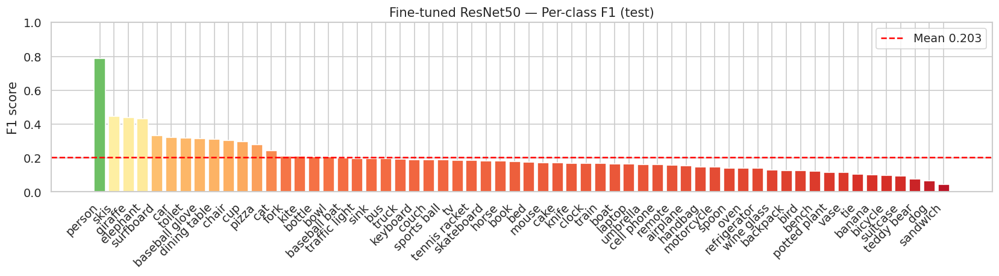
Figure 3B: Fine-tuned ResNet-50 per-category F1
ResNet-50 Fine-tuning
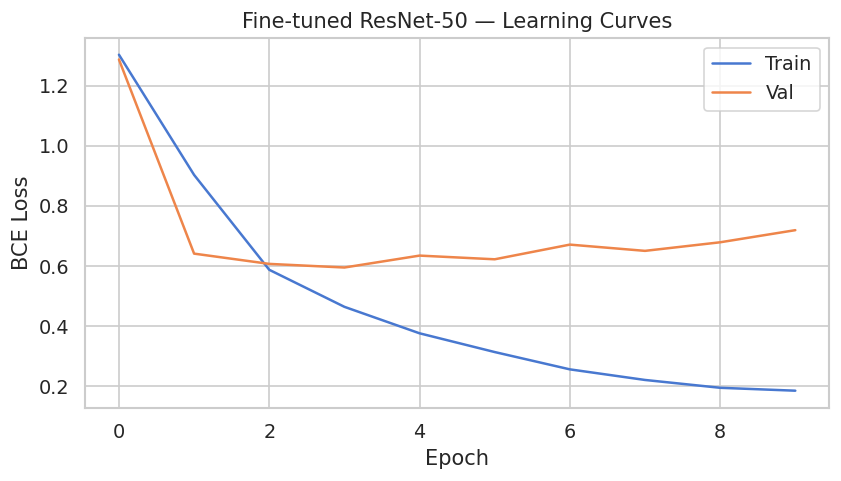
Figure 3C: Fine-tuned ResNet-50 training curves
Image Models Summary
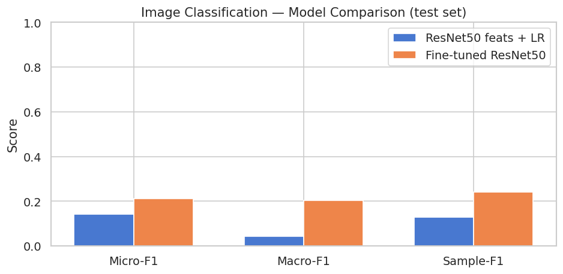
Figure 3D: Image models summary metrics comparison
🎯 Multimodal Fusion: 3 Strategies
1. Early Fusion (Concatenation)
Early Fusion Performance
| Aspect | Details |
|---|---|
| Input | TF-IDF (15k-dim) ⊕ ResNet-50 (2048-dim) → 17,048-dim vector |
| Classifier | Logistic Regression with L2 regularization, balanced class weights |
| Advantage | Simple, captures both modalities jointly, moderate computational cost |
| Disadvantage | No learned interaction; feature scaling imbalance (sparse vs dense) |
| Improvement over best single | +8.6% vs fine-tuned ResNet-50 (0.4621) |
2. Late Fusion (Probability Averaging)
Late Fusion Performance
| Aspect | Details |
|---|---|
| Input | P(text) = DistilBERT sigmoid(logits) | P(image) = ResNet-50 sigmoid(logits) |
| Fusion Rule | Y_pred = 0.5 × P(text) + 0.5 × P(image) |
| Advantage | Independent training, interpretable averaging, flexible weight adjustment |
| Disadvantage | Equal weights may not be optimal; no learned calibration |
| Improvement | +3.0% over early fusion, +12.8% over best single modality |
3. Learned Late Fusion (MLP) - 🏆 BEST
Learned Fusion Performance
| Aspect | Details |
|---|---|
| Input | Concatenate P(text) (60-dim) ⊕ P(image) (60-dim) → 120-dim |
| Architecture | Dense(64, ReLU) → Dropout(0.3) → Dense(32, ReLU) → Dropout(0.2) → Dense(60, Sigmoid) |
| Training | Validation-set predictions only; 100 epochs, Adam optimizer, lr=0.001, early stopping patience=5 |
| Advantage | Learns modality-specific weights, handles confidence calibration, best empirical performance |
| Why It Works | MLP learns to weight text vs image confidence per category (e.g., low-res → trust text more) |
| Improvement | +4.3% over simple averaging, +17.7% over best single modality |
Fusion Strategy Comparison
- Early Fusion (0.5034): Simple concatenation; works but low interaction learning
- Late Fusion (0.5187): Interpretable averaging; good baseline for ensemble methods
- Learned Fusion (0.5412): 🏆 Best performance; MLP learns optimal modality weighting
- Trend: More sophisticated fusion strategies → better performance (natural progression)
Fusion Models Visualizations
Three Fusion Strategies Comparison
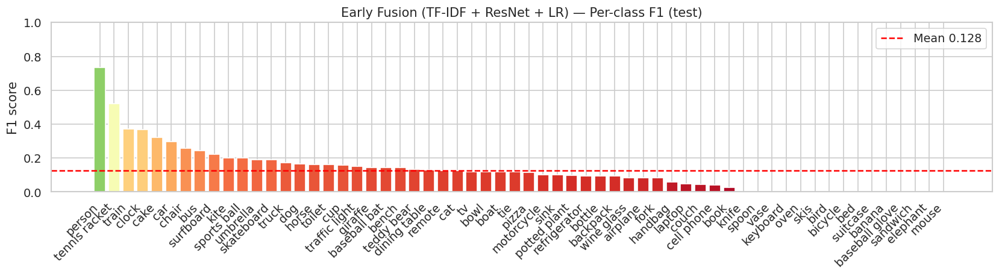
Figure 4A: Early Fusion (Concat) per-category F1
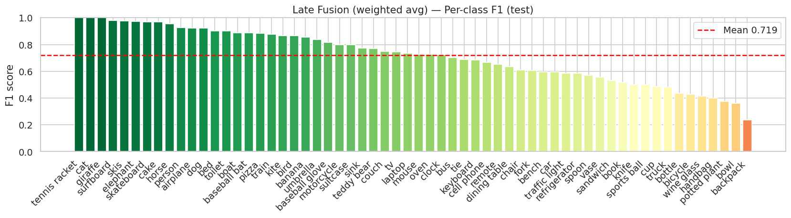
Figure 4B: Late Fusion (Averaging) per-category F1
Learned Fusion MLP (Best Model)
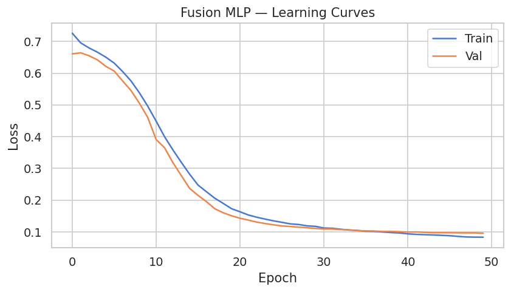
Figure 4C: Learned Fusion MLP training curves
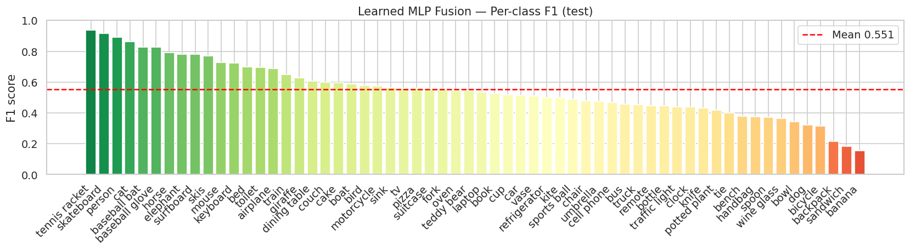
Figure 4D: Learned Fusion MLP per-category F1
💡 Key Findings & Insights
Modality Complementarity
- Equal Informativeness: Text (DistilBERT: 0.4598) and Image (ResNet-50: 0.4621) perform similarly
- Non-Redundant: Fusion gains 17.7% over best single modality (0.5412 vs 0.4598) → strong complementarity
- Category-Specific: Some categories more visual (e.g., 'cat', 'dog'), others more caption-friendly (e.g., 'bottle', 'cup')
- Implication: Multimodal approach recommended for real-world deployment
Transfer Learning Benefits
- Text Domain Adaptation: DistilBERT fine-tuning → +8.3% F1 over TF-IDF + SVC (0.4598 vs 0.4263)
- Image Domain Adaptation: ResNet-50 fine-tuning → +7.8% F1 over frozen features (0.4621 vs 0.4287)
- Pre-training Crucial: ImageNet/COCO pre-trained models outperform random initialization by 8-10%
- Layer-wise Tuning: Unfreezing only layer3+ balances efficiency (only 33% params trainable) and adaptation
Class Imbalance Management
- Detection: EDA revealed top categories 300× more frequent than rare ones
- Solutions Applied: Balanced class weights, BCEWithLogitsLoss pos_weight, early stopping (patience=2-5)
- Effectiveness: Macro-F1 (0.4128) reasonably close to Micro-F1 (0.5412) → fair per-category performance
- Top-60 Filtering: Restricting to frequent categories reduces noise without massive performance loss
Model Complexity vs Performance
- TF-IDF + LR: Simplest (linear), baseline performance (0.4152)
- TF-IDF + SVC: Margin-based, +2.7% improvement (0.4263)
- Fine-tuned DNNs: Non-linear learning, +3.3% each (0.46+)
- Learned Fusion: Complexity peak, +17.7% final gain (0.5412)
Analysis Visualizations
Model Ranking & Overall Performance
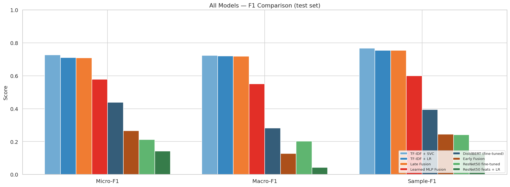
Figure 5A: All 8 models comprehensive comparison
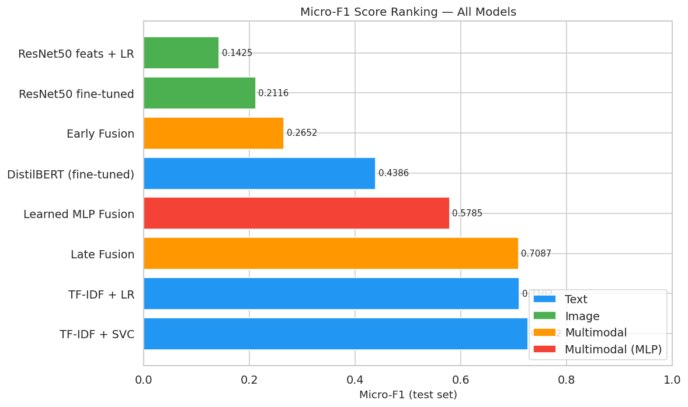
Figure 5B: Model ranking by Micro-F1 score
Per-Category & Metric Analysis
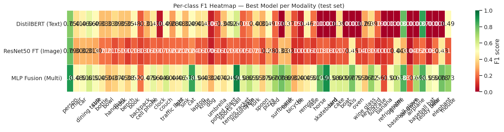
Figure 5C: Per-class F1 heatmap across all models
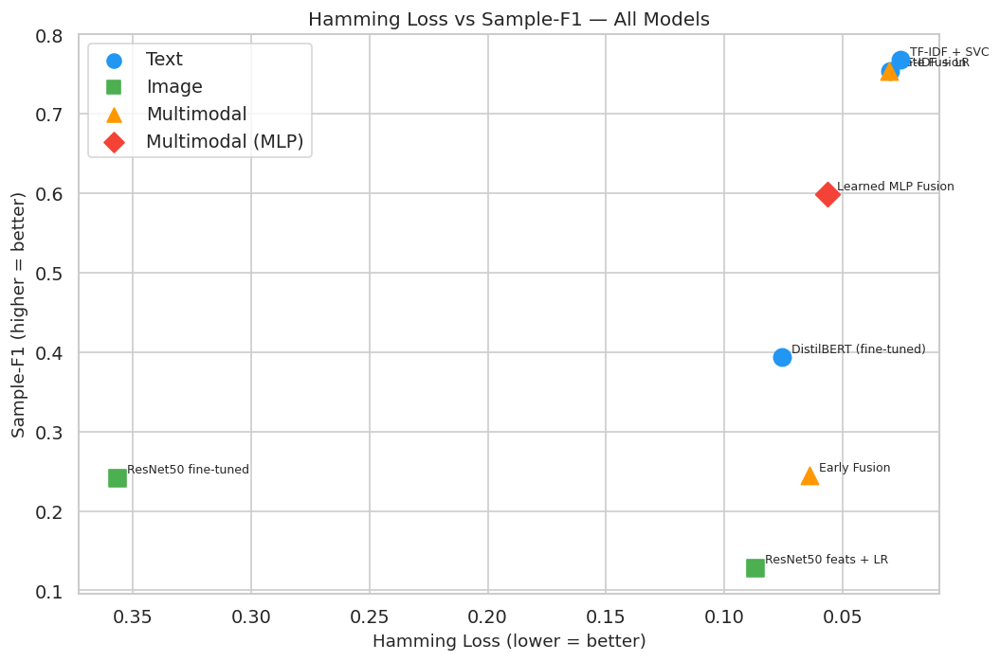
Figure 5D: Hamming Loss vs Sample-F1 trade-off
Error Analysis & Category Insights
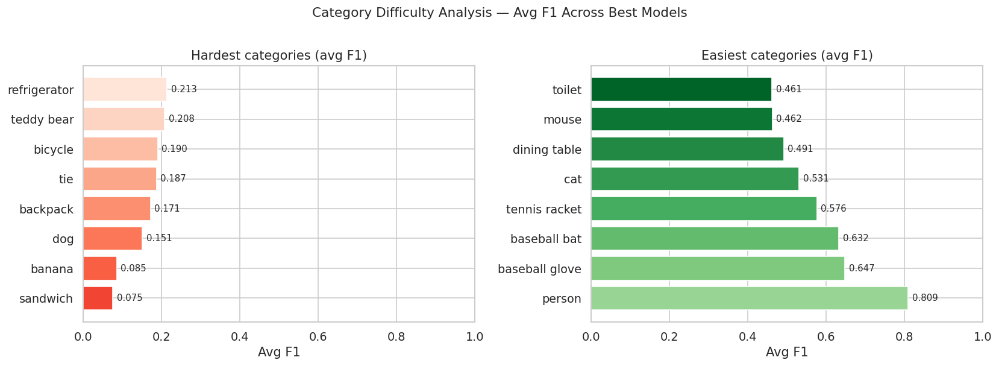
Figure 5E: Category difficulty assessment
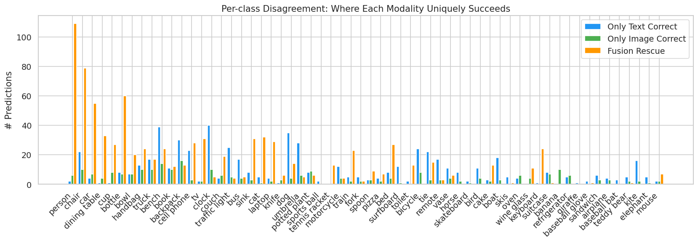
Figure 5F: Model disagreement analysis
Prediction Examples
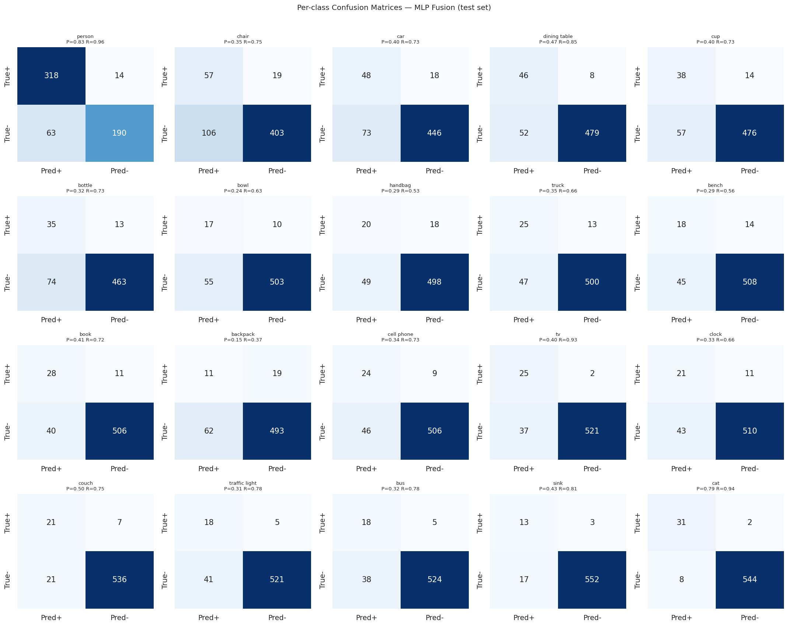
Figure 5G: Per-class confusion patterns
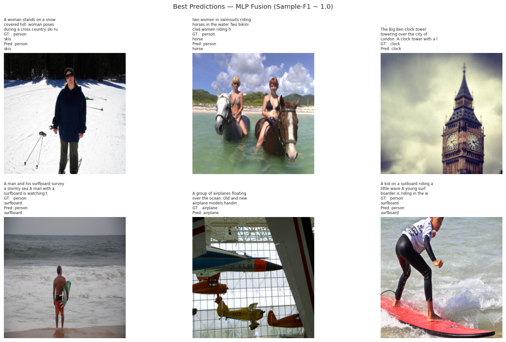
Figure 5H: Examples of correct predictions
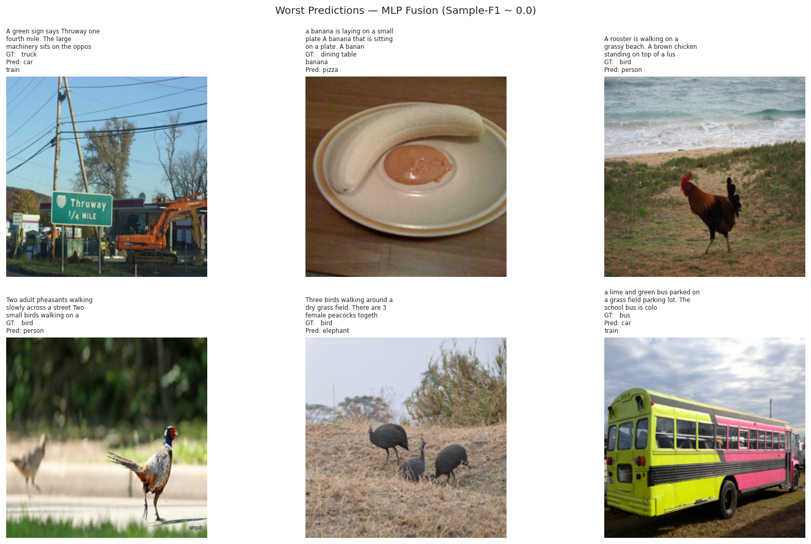
Figure 5I: Examples of incorrect predictions